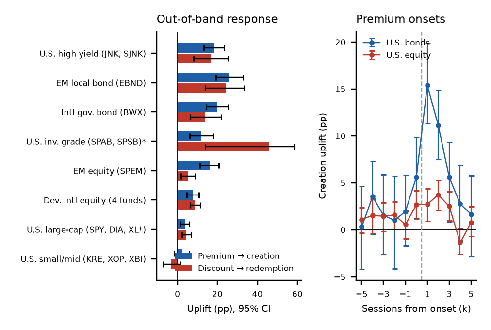
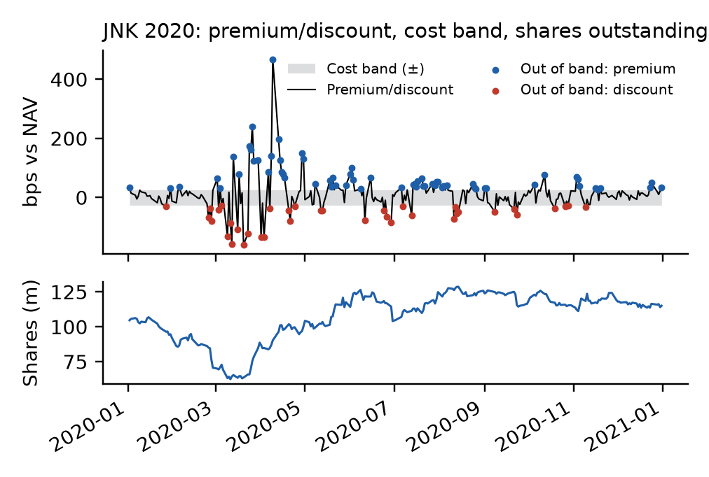
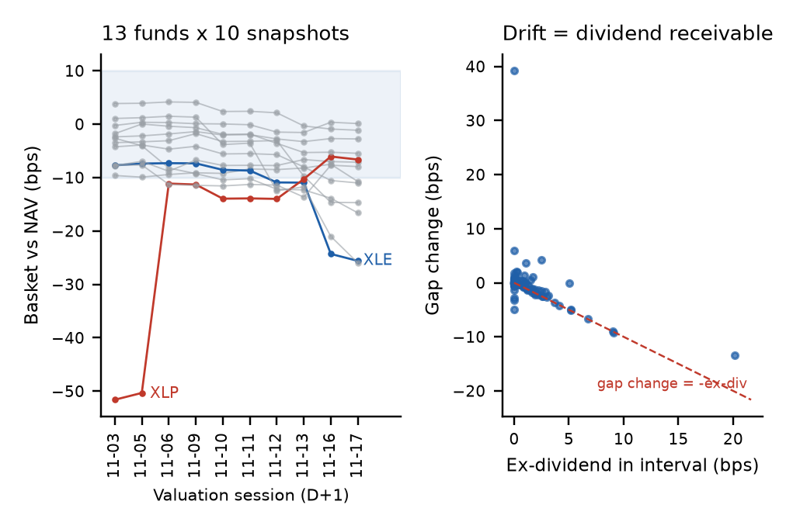
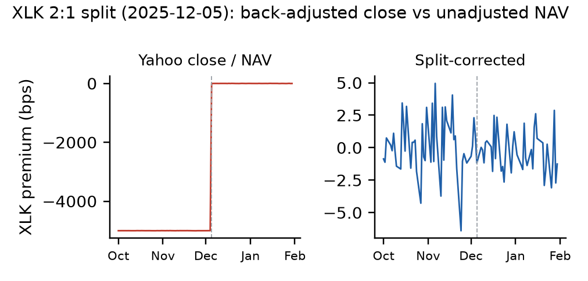

A daily monitor for 25 SPDR ETFs (U.S. equity, U.S. and international bond, international equity). It compares market price with official NAV and values the creation basket from issuer holdings. It models a cost-based arbitrage band and tests whether authorized participants (APs) create or redeem when the price leaves the band. Sample: Jan 2018 to Nov 2026, 55,575 fund-sessions.

Left: share of out-of-band sessions followed by net creation (premium) or redemption (discount) within 5 sessions, minus the in-band rate. *Only 43 discount events. Right: creation rate around premium onsets, minus the in-band rate; k = 1 is the first session that can show a response (SSGA reports shares one session late). Monthly block bootstrap, 95% CI.

JNK went to a deep discount in March 2020, and shares outstanding fell about 40% as APs redeemed. It then moved to a sustained premium, and creations rebuilt the fund.

Basket value (shares held × D+1 close + cash) vs D+1 NAV. Gaps drift down as components go ex-dividend: NAV books the receivable, the holdings file does not list it. XLP's −50 bps in the first two files did not recur.

Yahoo back-adjusts closes for splits, but the issuer's NAV history does not. Without the correction, every pre-split session shows a fake −5,000 bps discount.
Code, tests and methodology: github.com/blitzer04/etf-arbitrage-monitor. Raw provider data (SSGA, Yahoo) is not redistributed. All figures are derived aggregates.